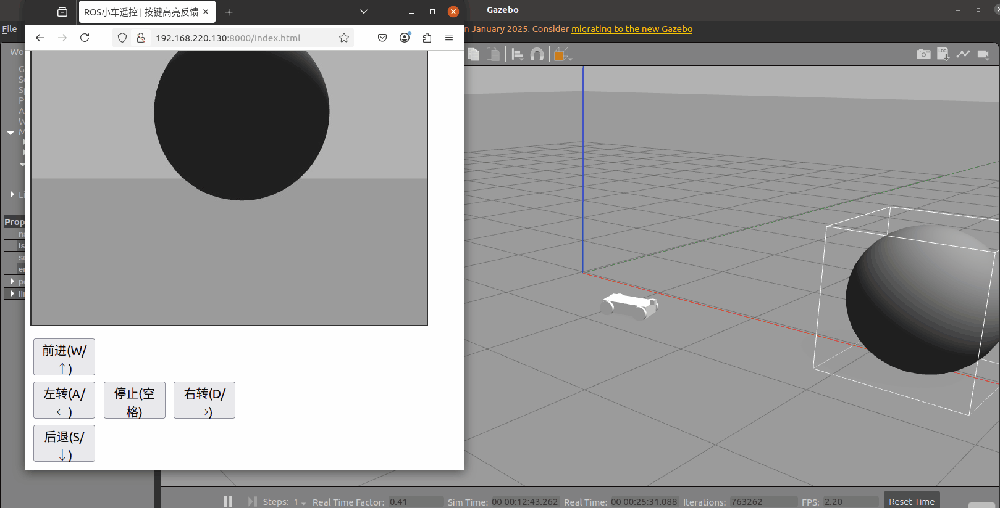
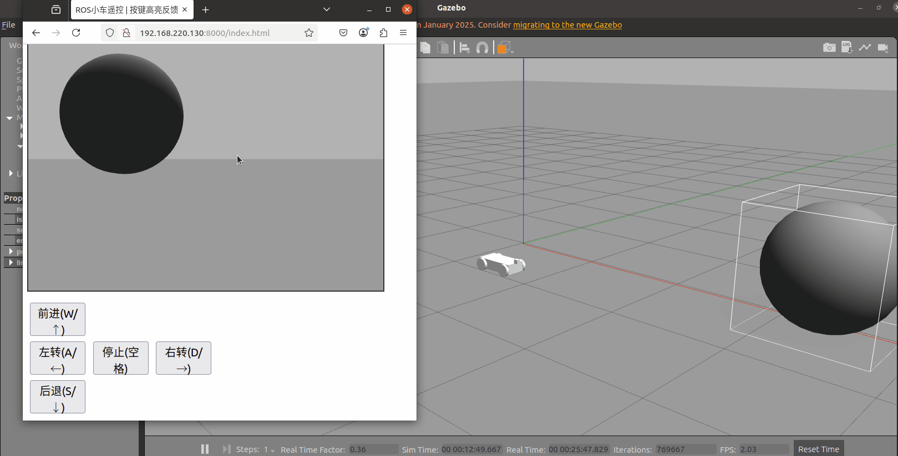

网页远程遥控小车
在 Gazebo 仿真环境中搭建搭载 RGB 相机的差速小车模型，通过 rosbridge_server 实现 ROS 与前端 JS 的 WebSocket 通信，web_video_server 推送相机图像流；网页端支持键盘控制小车运动，带按键按下高亮反馈，同步展示小车相机视角画面。
源码位置：src/ground/web_remote_car
1. 项目目标
- 在 Gazebo 中搭建搭载 RGB 相机的差速小车 Xacro 模型
- 使用
rosbridge_server建立 ROS 与网页前端的 WebSocket 通信 - 使用
web_video_server发布相机图像流 - 网页前端实现 W/A/S/D 键盘遥控小车，按键高亮反馈
- 网页实时渲染相机画面，实现远程可视化监控
2. 数据流
键盘按键事件 -> JS -> rosbridge_server -> /cmd_vel -> 小车运动
相机图像话题 /front_camera/image_raw -> web_video_server -> HTTP 图像流 -> 网页展示
3. 运行环境
| 项目 | 说明 |
|---|---|
| 操作系统 | Ubuntu 20.04.6 LTS |
| ROS | Noetic（1.17.4） |
| Python | 3.8.10 |
| 仿真器 | Gazebo 11 |
| 依赖 | ros-noetic-rosbridge-server、ros-noetic-web-video-server、xacro、joint_state_publisher、robot_state_publisher、gazebo_ros |
依赖安装：
sudo apt install ros-noetic-rosbridge-server ros-noetic-web-video-server
本项目依赖 Gazebo 仿真环境，不需要真实硬件小车与实体相机。
4. 构建
mkdir -p ~/ros1_ws/src
cp -r <仓库路径>/src/ground/web_remote_car ~/ros1_ws/src/
cd ~/ros1_ws
source /opt/ros/noetic/setup.bash
catkin_make
source devel/setup.bash
5. 启动
一条命令就把仿真、小车模型、rosbridge_server、web_video_server 和前端静态页面服务全部拉起来：
roslaunch web_remote_car start_all.launch
启动日志里会直接打印可以访问的地址，例如：
[INFO] 前端页面目录：/home/xxx/ros1_ws/src/web_remote_car/www
[INFO] 本机访问：http://127.0.0.1:8000/
[INFO] 局域网访问：http://192.168.1.102:8000/
浏览器打开日志里给出的地址即可，不需要再另外开终端跑 python3 -m http.server。静态页面由 scripts/web_server.py 节点托管（launch/web_bridge.launch 里已包含），监听 0.0.0.0:8000。
如果 8000 端口被占用，换端口启动：
roslaunch web_remote_car start_all.launch frontend_port:=8001
三个端口都能这样覆盖：frontend_port（前端页面，默认 8000）、bridge_port（rosbridge，默认 9090）、video_port（图像流，默认 8080）。改了 video_port 时，页面要带上 ?video=<IP>:<端口>，否则页面仍按 8080 取流。
仍然想手动起静态页面（例如只调试前端、不起仿真）时，用这条：
cd ~/ros1_ws/src/web_remote_car/www
python3 -m http.server 8000
必须在 www 目录下启动。http.server 遇到目录会自动返回 index.html，所以访问 http://127.0.0.1:8000/ 就直接进入遥控面板；如果在包根目录（web_remote_car/）里启动，打开只会看到一个文件列表，要点进 www/index.html 才到遥控页。
5.1 局域网内其他电脑访问
只在虚拟机本机测试，到上面这一步就够了。要让同一局域网的其他电脑也能操作，需要确认三件事：
- 虚拟机网络用桥接模式。NAT 模式下局域网里的其他机器访问不到虚拟机 IP。
- rosbridge 必须监听所有网卡。
launch/web_bridge.launch里已经写了<param name="address" value="0.0.0.0"/>，启动后核对：
netstat -tulpn | grep 9090
输出必须是 0.0.0.0:9090（或 :::9090）。如果只有 127.0.0.1:9090，说明没监听外网，其他机器连不上。
- 防火墙放行三个端口：
sudo ufw allow 9090/tcp # rosbridge WebSocket
sudo ufw allow 8080/tcp # web_video_server 图像流
sudo ufw allow 8000/tcp # 前端静态页面
然后在其他电脑上打开 http://<虚拟机IP>:8000/，页面自动连 ws://<虚拟机IP>:9090，不需要改代码。
如果网页所在主机和跑 rosbridge 的主机不是同一台，用地址栏参数显式指定：
http://<网页IP>:8000/index.html?bridge=<rosbridge所在IP>:9090
6. 查看结果
新开终端查看话题：
source /opt/ros/noetic/setup.bash
source ~/ros1_ws/devel/setup.bash
rostopic echo /cmd_vel
rostopic hz /front_camera/image_raw
浏览器打开 roslaunch 日志里打印的地址（默认 http://127.0.0.1:8000/，等价于 http://127.0.0.1:8000/index.html），默认控制按键：W 前进、S 后退、A 左转、D 右转、空格停止，方向键等效。
页面里的 rosbridge 地址和视频流地址由当前访问的主机名自动拼接，浏览器地址填哪台机器的 IP，前端就连哪台机器，不需要改代码。页面顶部会显示当前实际连接的 ws:// 地址，连接异常时原地给出排查提示，不会一直停在“正在连接”。
默认端口与话题：
| 话题 / 端口 | 说明 | 定义位置 |
|---|---|---|
/cmd_vel |
小车速度控制指令 | www/index.html |
/front_camera/image_raw |
相机原始图像 | urdf/car_cam.xacro |
| 9090 | rosbridge WebSocket 端口 | launch/web_bridge.launch |
| 8080 | web_video_server 服务端口 | launch/web_bridge.launch |
| 8000 | 前端静态页面端口 | launch/web_bridge.launch 的 frontend_port，由 scripts/web_server.py 提供 |
控制与相机画面演示：


7. 参数调整
参数直接写在各文件里，没有单独的 yaml 配置文件：
| 参数 | 默认值 | 位置 |
|---|---|---|
| rosbridge 端口 | 9090 | launch/web_bridge.launch 的 bridge_port 参数 |
| 视频流端口 | 8080 | launch/web_bridge.launch 的 video_port 参数 |
| 前端页面端口 | 8000 | launch/web_bridge.launch 的 frontend_port 参数 |
| 相机话题 | /front_camera/image_raw |
urdf/car_cam.xacro 的 imageTopicName |
| 线速度 | 0.3 m/s | www/index.html 中 SPEED |
| 角速度 | 0.4 rad/s | www/index.html 中 TURN_SPEED |
修改端口或相机话题后，需要同步修改前端 www/index.html 里的 BRIDGE_PORT、VIDEO_PORT、CAMERA_TOPIC 三个常量，重启 launch 生效。
8. 实测结果
测试环境：Ubuntu 20.04.6 LTS、ROS Noetic 1.17.4、Python 3.8.10、Gazebo 11。
catkin_make构建成功- Gazebo 正常加载小车模型，
/front_camera/image_raw正常发布 - 网页端按键指令正常下发到
/cmd_vel，小车按 W/A/S/D 平顺运动 web_video_server图像流在网页端正常渲染
另外在一台干净的 Ubuntu 上从零复现过一遍（clone 仓库 → catkin_make → roslaunch web_remote_car start_all.launch → 浏览器访问）：/gazebo/model_states 里能看到 web_car，/front_camera/image_raw 出 640×480 图像，网页点「前进」后 /cmd_vel 的发布者是 rosbridge、订阅者是 gazebo，小车位姿实际发生位移。
话题实测频率：
| 话题 | 实测频率 |
|---|---|
/front_camera/image_raw |
约 30 Hz |
/cmd_vel |
按键触发，按需发布 |
9. 常见问题
| 现象 | 原因 | 处理 |
|---|---|---|
启动报找不到 rosbridge_server / web_video_server |
未安装对应包 | sudo apt install ros-noetic-rosbridge-server ros-noetic-web-video-server |
| 浏览器打不开，提示“无法连接 / 拒绝连接” | frontend_http 节点没起来（launch 未启动、端口被占、或包没重新 catkin_make 导致 node 找不到） |
看 roslaunch 日志里有没有 前端页面目录 那几行；ss -tlnp \| grep 8000 确认在监听；端口被占就 roslaunch web_remote_car start_all.launch frontend_port:=8001 |
打开 ...:8000 只看到文件列表，不进遥控页 |
用的是手动 http.server 且启动目录是包根目录 |
cd 到 www 目录重新启动；或直接访问 ...:8000/index.html；推荐直接用 launch 自带的服务 |
| 本机能控制，别的电脑一直停在“正在连接” | 访问地址用了 127.0.0.1（那指对方自己的电脑），或 rosbridge 没监听外网、防火墙拦截 | 用 http://<虚拟机IP>:8000/index.html 访问；netstat -tulpn 里 9090 要显示 0.0.0.0:9090；sudo ufw allow 9090/tcp |
页面能打开，但一直停在“正在连接 rosbridge…”，按 F12 控制台报 ROSLIB is not defined |
2026-11-09 之前的版本从公网 CDN（cdn.jsdelivr.net）加载 roslib.js，只有内网 / 无外网的机器（虚拟机、校园网）取不到，ROSLIB 为 undefined，连接函数抛异常，页面就永远不会进入连接成功，也来不及弹出超时提示 |
本次已改为零依赖实现（用浏览器原生 WebSocket 直接说 rosbridge 的 JSON 协议，不再引用任何 CDN 脚本）；更新代码后 catkin_make 并重启 start_all.launch，浏览器按 Ctrl+F5 强制刷新旧页面 |
改了 www/index.html，浏览器里还是旧页面 |
SimpleHTTPRequestHandler 默认允许缓存 |
本次已给 scripts/web_server.py 加上 Cache-Control: no-store；旧版本抓过的页面仍需按一次 Ctrl+F5 |
| 网页提示连接断开 | rosbridge 未运行或端口被占用 | rostopic list 确认 ROS 正常，检查 9090 端口 |
| 网页看不到相机画面 | 视频流话题与 xacro 中的话题不一致 | 核对 urdf/car_cam.xacro 的 imageTopicName 与 index.html 的 CAMERA_TOPIC |
| 按键控制小车不动 | /cmd_vel 没有消息或差速插件未加载 |
rostopic echo /cmd_vel 排查，检查 xacro 中 libgazebo_ros_diff_drive.so 插件 |
10. 已知限制
- 仅支持单用户控制，多端同时下发速度指令会互相覆盖。
- 只有远程手动遥控，没有自主避障、路径规划、自动巡航。
- 相机只做原始图像推流，不含图像识别、目标检测处理。
- 模型为纯仿真差速车，未在实体硬件上部署验证。
- 断线后需要点页面上的「重新连接」按钮，未做全自动重连。
11. 小结
本项目基于 ROS Noetic 搭建网页远程监控遥控系统，rosbridge 打通 ROS 后端与前端，web_video_server 完成图像推流。适合仿真小车远程操控、车载相机可视化场景，可以在此基础上扩展雷达数据可视化、自动避障、AEB 制动等功能。